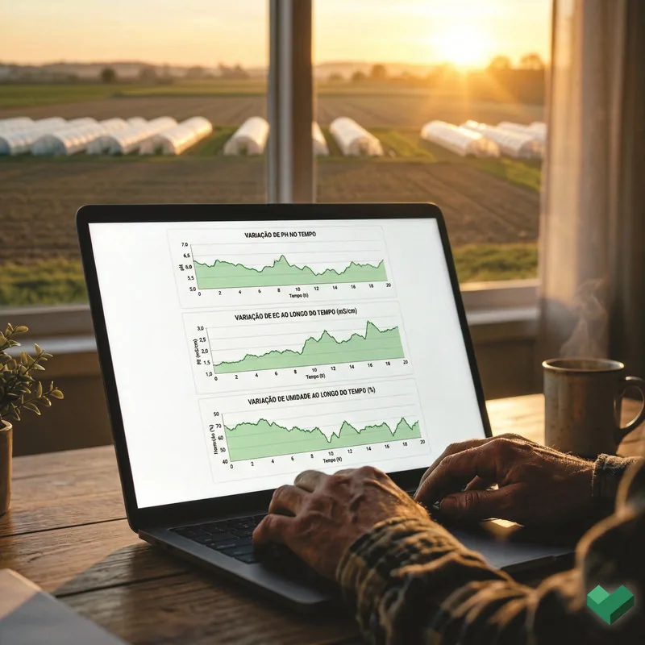

TeraSmart
Gestão autônoma, em malha fechada.
Plataforma fixa de hardware + software para estufas. Lê o solo e o clima, decide o que a lavoura precisa e aciona sozinha a irrigação e a fertirrigação — detecta, dosa e aplica, mantendo o solo sempre na condição ideal.

fig. 02 — painel TeraSmartAbra a caixa,
veja a malha.
Este e o gabinete que fica na estufa: 300 × 200 × 150 mm, painel frontal com display de operacao e, atras dele, a placa que fecha a malha. Gire, abra e toque em cada no para ler o que ele controla.
Abra o painel
Toque em Abrir painel. A placa se destaca e os oito nos da malha ficam acessiveis — clique em cada um para ler o que aquela parte faz.
Gestão
autônoma.
Quatro frentes de sensoriamento alimentam uma única decisão: quanto de água e de nutriente aplicar, e quando.
Sensoriamento do solo 24/7
Umidade, temperatura, condutividade, salinidade e pH monitorados em tempo real, sem interrupção.
Clima da estufa
Temperatura e umidade relativa do ar acompanhadas de perto para proteger a cultura.
Fertirrigação de precisão
Dosagem volumétrica de nutrientes, injetada na proporção exata da vazão — água e adubo na medida certa.
Nível dos reservatórios
Sensores acompanham os tanques e disparam alertas preditivos antes de faltar.
A fertirrigação,
de ponta a ponta.
Toque para rodar um ciclo completo da malha fechada: o sistema mede o solo seco, decide a dose, abre as válvulas, injeta os nutrientes e devolve a planta à condição ideal — sozinho.
Fluxo de automação
Coleta
Sensores captam as métricas de umidade e nutrientes diretamente do solo.
Só o TeraSmart
fecha a malha.
Sensores isolados dizem o que está errado. Válvulas automáticas dizem quando ligar. O TeraSmart decide, dosa e aplica sozinho — sem depender do produtor no momento certo.
| Manejo manual | Sensores isolados | Irrigação genérica |
TeraSmart | |
|---|---|---|---|---|
| Sensoriamento multivariável do solo | ||||
| Fertirrigação proporcional à vazão | ||||
| Decisão automática (malha fechada) | ||||
| Monitoramento de clima da estufa | ||||
| Alerta preditivo de reservatório | ||||
| Histórico e custo por setor |
Resultados
projetados.
Metas de desempenho projetadas com uso contínuo — ainda não validadas em safra fechada.
A estufa
no seu bolso.
Toque em Entrar no aparelho e percorra as nove telas do TeraBoard. São as telas de verdade rodando aqui dentro — roláveis, não capturas de tela — do quadro geral das estufas ao extrato que fecha o custo por quilo.
As telas não são clicáveis: a vitrine mostra o app, não o opera. O aplicativo completo acompanha a instalação do TeraSmart.